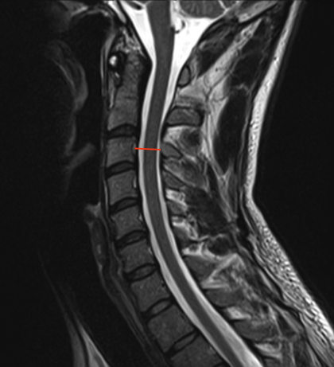

Adapted from: Di Muzio B, Normal cervical spine MRI. Case study, Radiopaedia.org (Accessed on 17 Dec 2025) https://doi.org/10.53347/rID-38418
1) Description of Measurement
Sagittal canal diameter is a direct linear measurement of the anteroposterior (AP) dimension of the cervical spinal canal, reflecting the space available for the spinal cord. On MRI, this measurement incorporates both osseous and soft-tissue boundaries, making it the most accurate imaging modality for evaluating true canal compromise.
Reduced sagittal canal diameter correlates strongly with cervical spinal stenosis, myelopathy, and increased risk of neurologic injury, particularly in the presence of degenerative disc disease, posterior osteophytes, ligamentum flavum hypertrophy, or disc herniation.
2) Instructions to Measure
3) Normal vs. Pathologic Ranges
4) Important References
Hinck VC, Sachdev NS. Developmental stenosis of the cervical spinal canal. Brain. 1966 Mar;89(1):27-36. doi: 10.1093/brain/89.1.27.
Pavlov H, Torg JS, Robie B, Jahre C. Cervical spinal stenosis: determination with vertebral body ratio method. Radiology. 1987 Sep;164(3):771-5. doi: 10.1148/radiology.164.3.3615879.
Takao T, Morishita Y, Okada S, et al. Clinical relationship between cervical spinal canal stenosis and traumatic cervical spinal cord injury without major fracture or dislocation. Eur Spine J. 2013 Oct;22(10):2228-31. doi: 10.1007/s00586-013-2865-7. Epub 2013 Jun 23.
Boden SD, McCowin PR, Davis DO, et al. Abnormal magnetic-resonance scans of the cervical spine in asymptomatic subjects. A prospective investigation. J Bone Joint Surg Am. 1990 Sep;72(8):1178-84.
5) Other info....
MRI is the gold standard for assessing canal diameter due to visualization of:
Should be interpreted alongside:
Dynamic factors (motion-dependent narrowing) may not be fully captured on static MRI—consider flexion-extension X-rays when instability is suspected
Diameter alone does not dictate symptoms; cord deformation and chronicity are critical modifiers